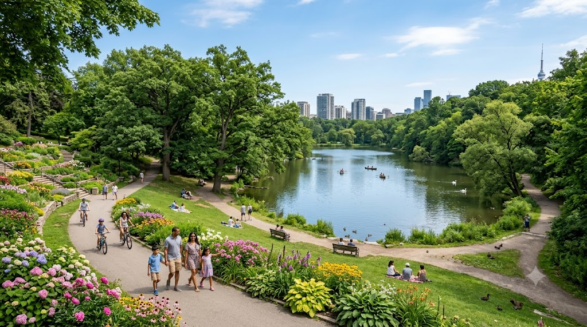
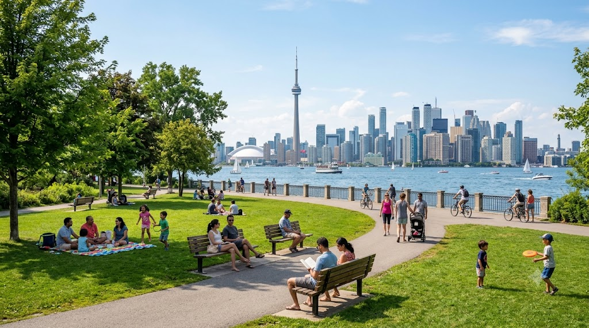
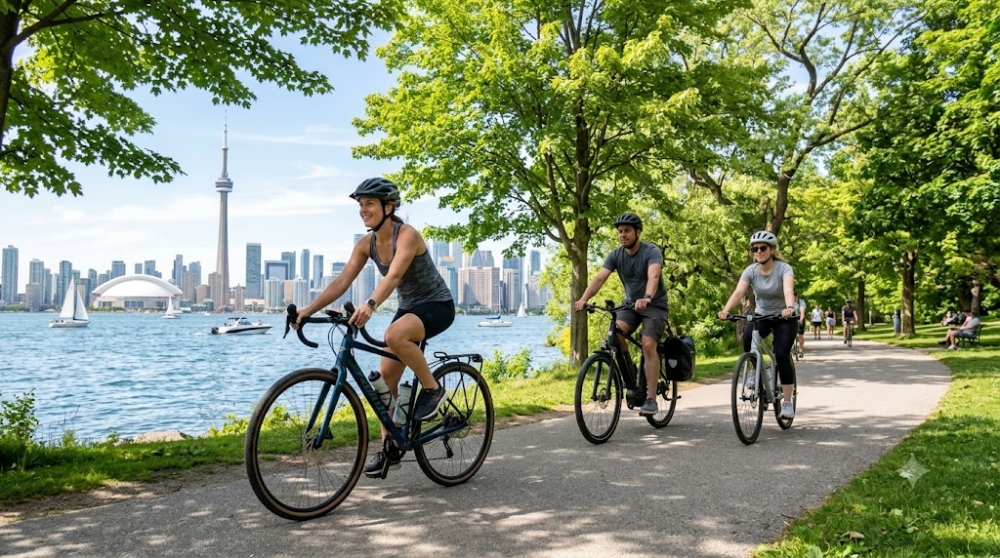
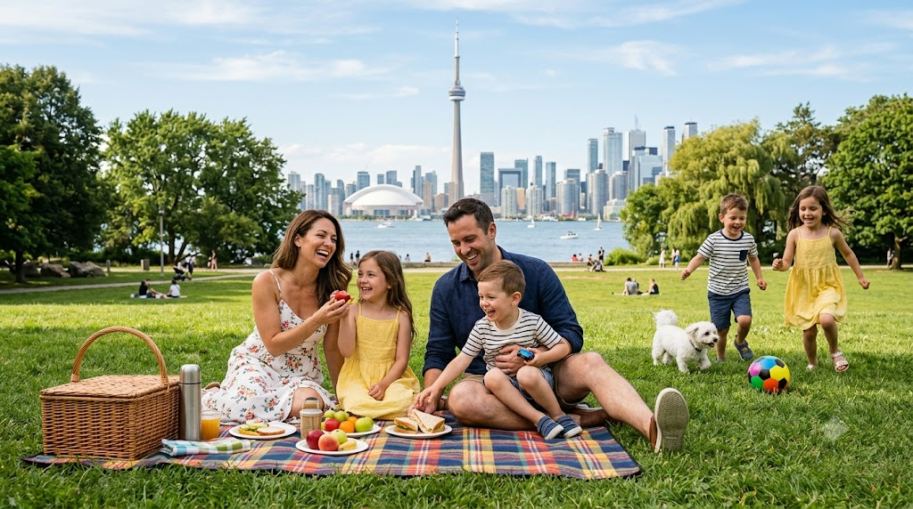
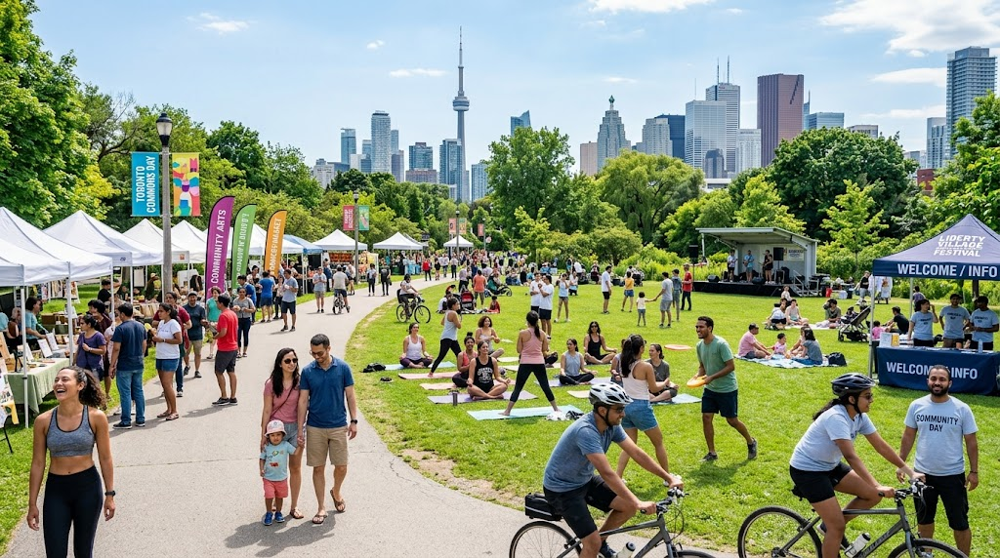

Most PopularCentre Island Park
The vibrant heart of the islands featuring Centreville amusement park, Franklin Children's Garden, swan boats, and wide picnic meadows.
Explore Centre Island →Seamless ferry crossings, tranquil beaches, blooming parklands, and unforgettable skyline views. Track live vessels, check real-time gate capacities, and book your tickets in seconds.
Inspect real-time ferry vessel coordinates on our animated AIS radar map, monitor Jack Layton turnstile queue clearance in minutes, check Lake Ontario water temperatures, and review peak hour passenger traffic.
Each island dock offers a completely unique adventure—from family attractions and botanical gardens to sandy shores and cycling boardwalks.

Most PopularThe vibrant heart of the islands featuring Centreville amusement park, Franklin Children's Garden, swan boats, and wide picnic meadows.
Explore Centre Island →
Quiet & CharmingA serene residential oasis with bohemian cottage gardens, quiet eastern beaches, artisanal cafes, and relaxed walking boardwalks.
Explore Ward's Island → Sunset & Dunes
Sunset & Dunes
Famous for golden hour sunsets, historic Gibraltar Point Lighthouse, expansive western sand dunes, tennis courts, and peaceful trails.
Explore Hanlan's Point →Our dedicated passenger fleet provides frequent, safe, and comfortable crossings between the downtown waterfront and all three Toronto Island terminals year-round.
Rent a quad-cycle, kayak through the lagoons, or spread out a picnic blanket beneath ancient willow trees.

Explore over 15km of car-free paved trails on traditional tandem or multi-passenger family quad cycles.
Rental Rates & Info →
Over 30 designated picnic shelters with fire pits, shade trees, and scenic water views for family celebrations.
Permits & Sites →
Ride the antique carousel, splash down the log flume, and pet friendly farm animals at Far Enough Farm.
Attraction Tickets →From international dragon boat festivals to acoustic sunset concerts on the pier, discover what's happening on the water this season.
View Events Calendar →Round-trip ferry tickets are valid for any sailing throughout the season. Buy ahead online, receive your digital pass instantly, and board directly.